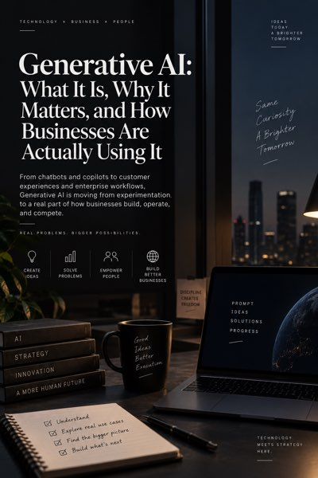
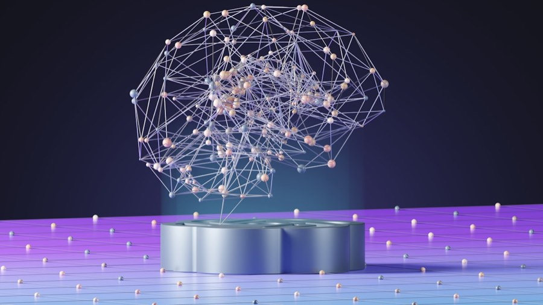
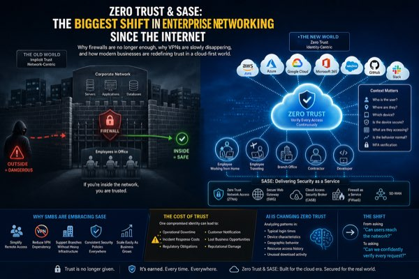
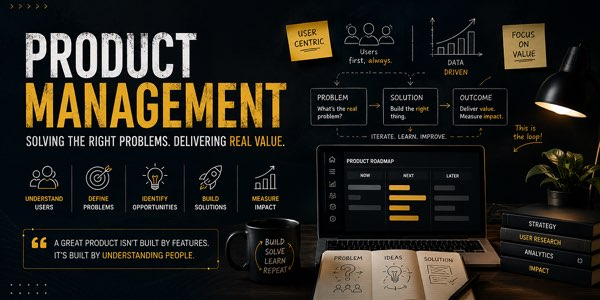
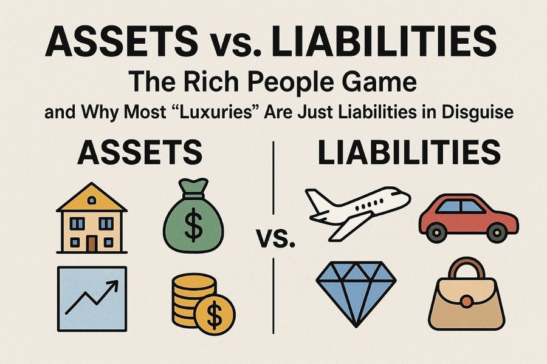

Notes on AI, security architecture and product — mostly the parts that don't make it into a roadmap doc.

Generative AI: what it is, why it matters, and how businesses are actually using it "Having access to Generative AI isn't the same as creating value with it" — successful implementations begin with a real business problem, not the technology.
NLP architecture: from tokenization to transformers Mastering AI prompts: turning questions into powerful results
Zero Trust & SASE: the biggest shift in enterprise networking since the internet "Identity is the new perimeter" — how Zero Trust and SASE architectures replace outdated, firewall-centric approaches for cloud-first environments. The $18,000 mistake: why small businesses can no longer ignore Zero Trust & SASE A realistic scenario where compromised credentials cascade into full organizational compromise — smaller orgs are attractive targets precisely because they lack dedicated security resources. Part I: behind the screens — a practical guide to how hacking really works Understanding cybersecurity: architecture, technologies, and flows
Product management: building products is easy, building value is hard "Great products are built by understanding people better than everyone else" — product strategy is human-centered, not about shipping maximum features.
Assets vs. liabilities: the rich people game Dissecting what builds long-term value versus what silently drains it — most "luxuries" are liabilities in disguise.